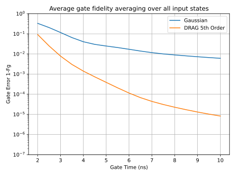

DRAG
This example shows how to implement a NOT gate on a qubit using a Gaussian pulse. We then extend this method to a three-level slightly anharmonic energy spectrum with nearest level coupling. As we will see, the gate error increases due to leakage into the third level. To remedy this, we implement Derivative Removal by Adiabatic Gate (DRAG) which offers better gate fidelity than an ordinary Gaussian pulse (see the References).
A simple NOT Gate
First, we will apply a simple NOT gate to a qubit in the ground state. The Hamiltonian for our qubit in the lab frame can be written as $ħ(ω|1⟩⟨1|+ℇ(t)σ_x)$ where $ħω$ is the transition energy, $σ_x$ is the Pauli-X operator, and $ℇ(t)=ℇ^x(t)\cos(ω_dt)$ represents our control of the system using a drive frequency $ω_d$. Any control $ℇ^x(t)$ such that the integral of $ℇ^x$ over the total gate time equals $π$ will result in a complete inversion. It is common to use a Gaussian shaped π-pulse to implement a NOT gate. For our purposes, we will find it more convenient to work in the rotating frame with respect to our drive frequency $ω_d$. When this frequency is resonant with the qubit frequency $ω$, the Hamiltonian is given by $ħℇ^x(t)σ_x/2$. If we are going to solve the time dynamics for this system, we also have to define our pulse in the rotating frame.
using Schrodinger, SpecialFunctions, SparseArrays
function rotgaussianpulse(t::Real,p::Vector)
# normalized pulse centered on t=0, begins and ends at 0
tg = p[1] # gate time
σ = p[2] # standard deviation
A = p[3] # amplitude
B = inv(√(2π)*σ*erf(tg/(√(8)*σ))-tg*gaussian(0.5tg,σ)) # normalize
Ɛˣ = A*B*(gaussian(t,σ)-gaussian(0.5tg,σ))
return Ɛˣ
end
H = σx/2 # same as create(2)/2 + destroy(2)/2; using natural units where ħ=12×2 Operator{SparseMatrixCSC{Float64,Int64},1} with dimensions 2
0.0 0.5
0.5 0.0
We are now ready to solve for the time dynamics and plot our results. We'll use parameters that are typical for Transmon qubits.
tg = 6e-9 # gate time 6ns
σ = 0.5tg # standard deviation of gaussian pulse
g = basis(2,0) # begin in ground state
tspan = (-tg/2,tg/2) # pulse centered at t=0
res1 = sesolve((qzero(2),(H,rotgaussianpulse,[tg,σ,π])),g,tspan,saveat=tg/200)
using PyPlot
plot(res1.times*1e9,levelprobs(res1.states)); grid();
xlabel("Time (ns)"); ylabel("Level Probabilities");
legend(["Ground State", "Excited State"]);As is expected, the system moves from the ground state to the excited state.
Three-level system
In reality, one must worry about leakage into other states of the system, especially when dealing with short gate times. Let's see how our Gaussian pulse performs on a three-level anharmonic system. We will again work in the rotating frame at resonance with the qubit frequency. This system will have an anharmonicity $Δ$, which is the detuning of the 2nd excited state with respect to the drive frequency, and an additional parameter $λ$ describing the relative strength of the 1-2 transition compared to the 0-1 transition (see [1] for more details). Let's create the Hamiltonian and perform the same time evolution.
Δ = 2π*(-400e6) # anharmonicity
λ = √2 # relative transition strength
Π₂ = basis(3,2) * basis(3,2)' # projector for the 2nd level
Hc = Δ*Π₂ # constant Hamiltonian
Hd = create(3)/2 + destroy(3)/2 # affected by Ɛˣ
g = basis(3,0)
res2 = sesolve((Hc,(Hd,rotgaussianpulse,[tg,σ,π])),g,tspan,saveat=tg/200)
plot(res2.times*1e9,levelprobs(res2.states)); grid()
xlabel("Time (ns)"); ylabel("Level Probabilities");
legend(["Ground State", "1st Excited State", "2nd Excited State"]);
Instead of working perfectly, our system leaks into the 2nd energy level (we'll quantify this later). This becomes problematic when we're trying perform useful computations. DRAG is one possible remedy where introducing drive detuning and a second quadrature control, that is $ℇ(t)=ℇ^x(t)\cos(ω_dt)+ℇ^y(t)\sin(ω_dt)$, helps eliminate some of the leakage. Let's see how much of an improvement we get. We'll need to define a few more functions for the new controls.
function DRAGx(t::Real,p::Vector)
# Ɛˣ for fifth order DRAG
tg = p[1] # gate time
σ = p[2] # standard deviation
A = p[3] # amplitude
Δ = p[4] # anharmonicity
λ = p[5] # relative strength of transitions
Ɛˣ = rotgaussianpulse(t,[tg,σ,A]) + (λ^2-4)*rotgaussianpulse(t,[tg,σ,A])^3/(8*Δ^2) - (13λ^4-76λ^2+112)*rotgaussianpulse(t,[tg,σ,A])^5/(128Δ^4)
return Ɛˣ
end
function DRAGy(t::Real,p::Vector)
# Ɛʸ for fifth order DRAG
tg = p[1] # gate time
σ = p[2] # standard deviation
A = p[3] # amplitude
Δ = p[4] # anharmonicity
λ = p[5] # relative strength of transitions
B = inv(√(2π)*σ*erf(tg/(√(8)*σ))-tg*gaussian(0.5tg,σ))
Ɛˣ′ = A*B*Schrodinger.gaussianprime(t,σ)
Ɛʸ = -Ɛˣ′/Δ + 33*(λ^2-2)*rotgaussianpulse(t,[tg,σ,A])^2*Ɛˣ′/(24*Δ^3)
return Ɛʸ
end
function dydet(t::Real,p::Vector)
# dynamical detuning for fifth order DRAG
tg = p[1] # gate time
σ = p[2] # standard deviation
A = p[3] # amplitude
Δ = p[4] # anharmonicity
λ = p[5] # relative strength of transitions
δ₁ = (λ^2-4)*rotgaussianpulse(t,[tg,σ,A])^2/(4*Δ) - (λ^4-7λ^2+12)*rotgaussianpulse(t,[tg,σ,A])^4/(16Δ^3)
return δ₁
end
Π₁ = basis(3,1) * basis(3,1)' # projector for 1st level
Hdet = Π₁ # affected by dynamical detuning
Hdx = create(3)/2 + destroy(3)/2 # affected by Ɛˣ
Hdy = im*create(3)/2 - im*destroy(3)/2 # affected by Ɛʸ
res3 = sesolve((Hc,(Hdet,dydet,[tg,σ,π,Δ,λ]),(Hdx,DRAGx,[tg,σ,π,Δ,λ]),(Hdy,DRAGy,[tg,σ,π,Δ,λ])),g,tspan,saveat=tg/200)
plot(res3.times*1e9,levelprobs(res3.states)); grid()
xlabel("Time (ns)"); ylabel("Level Probabilities");
legend(["Ground State", "1st Excited State", "2nd Excited State"]);There is a noticeable improvement over the simple Gaussian pulse, but how much better is the new gate?
Fidelity
We can calculate the fidelity of our gates by comparing their output to the ideal case. Our gates behave ideally when $λ=0$ and there is no leakage into the 2nd excited state. Using the same measure of error as in [1], we can take the overall gate fidelity to be the average of gate fidelities when using the 6 axial states on the Bloch sphere as inputs.
tgs = (2:0.5:10)*1E-9 # gate times
Fg_res = Matrix{Float64}(undef,length(tgs),2) # initialize matrix for number of solves
axialkets = [normalize!(Ket([1,1,0])), # +X
normalize!(Ket([1,-1,0])), # -X
normalize!(Ket([1,im,0])), # +Y
normalize!(Ket([1,-im,0])), # -Y
normalize!(Ket([1,0,0])), # +Z
normalize!(Ket([0,1,0]))] # -Z
axialops = Operator.(axialkets) # need density operators too
Uideal = qeye(3); Uideal[1:2,1:2] = data(σx)
for (i,tg) in enumerate(tgs)
sum1 = 0 # sum of Gaussian gate fidelities
sum2 = 0 # sum of DRAG gate fidelities
for j = 1:6
ket = axialkets[j]
op = axialops[j]
tspan = (-tg/2,tg/2)
# Gaussian
res4_1 = sesolve((Hc,(Hd,rotgaussianpulse,[tg,σ,π])),ket,tspan)
sum1 += trace(Uideal*op*Uideal'*(res4_1.states[end]*res4_1.states[end]'))
# DRAG
res4_2 = sesolve((Hc,(Hdet,dydet,[tg,σ,π,Δ,λ]),(Hdx,DRAGx,[tg,σ,π,Δ,λ]),(Hdy,DRAGy,[tg,σ,π,Δ,λ])),ket,tspan)
sum2 += trace(Uideal*op*Uideal'*(res4_2.states[end]*res4_2.states[end]'))
end
Fg_res[i,:] = [sum1/6 sum2/6] # take average
end
plot(tgs*1E9, 1 .- Fg_res); ylim([10E-8,1]); grid()
title("Average gate fidelity averaging over all input states");
yscale("log"); xlabel("Gate Time (ns)"); ylabel("Gate Error 1-Fg");
legend(["Gaussian","DRAG 5th Order"]);
For a gate time of 6ns, taking advantage of DRAG results in a gate error that is 2 orders of magnitude less than when using Gaussian pulses.
References
- Motzoi, F., Gambetta, J. M., Rebentrost, P., & Wilhelm, F. K. (2009). Simple Pulses for Elimination of Leakage in Weakly Nonlinear Qubits. Physical Review Letters, 103(11), 110501. 10.1103/PhysRevLett.103.110501 or arXiv:0901.0534